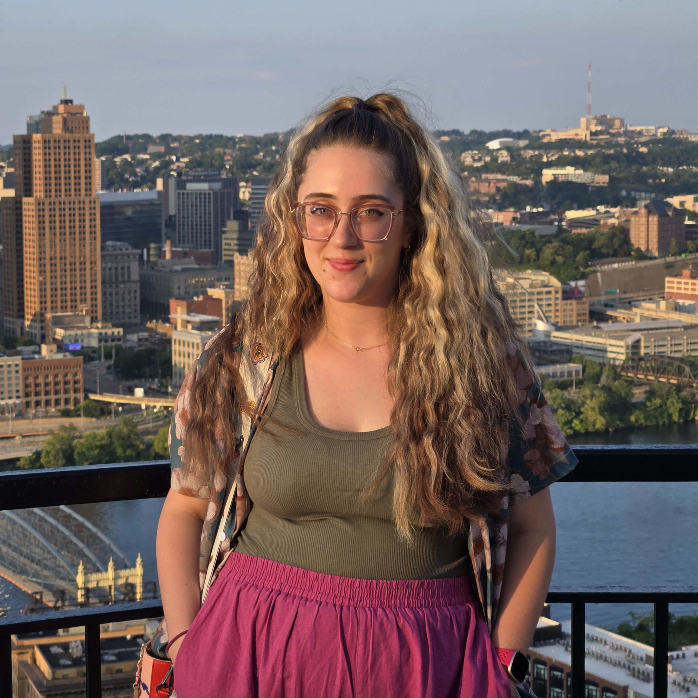

New York University
Doctor of Philosophy in Mathematics
University of Pittsburgh
Bachelor of Philosophy in Mathematics and Physics
Mariya Savinov |
|
|||||
 |
Postdoctoral
Fellow at NSF-Simons National
Institute for Theory and Mathematics in Biology Chicago Fellow of UChicago Biological Sciences Division e-mail: savinov [at] uchicago [dot] edu |
About Me
I am
currently a postdoctoral fellow at the NSF-Simons National Institute for
Theory and Mathematics in Biology, jointly
as a Chicago Fellow of the University of Chicago
Biological Sciences Division. In my research, I develop
new mathematical models and approaches to explore
biomechanical processes arising in cell biology, with a
special focus on the interplay between mechanical forces
and mechanisms for control. Using data-driven perspectives
and methods (e.g., with the Mangan group), I
use biophysical models to generate experimentally testable
predictions which I explore with collaborators including
the Cytomorpho Lab,
Munro Lab,
Nirody Lab,
and others. |
Education
|
| 2020 - 2025 New York University Doctor of Philosophy in Mathematics |
|
| 2016 - 2020 University of Pittsburgh Bachelor of Philosophy in Mathematics and Physics |
Outreach
I believe it
is crucial that we work hard to
make mathematics more inclusive,
supportive, and welcoming to
individuals who have been
historically marginalized in the
mathematical sciences. In
pursuit of this, during my PhD I
co-organized the Courant
DEI
Reading
Group
as well as led
the effort to
generate an internal
survey to
assess the
concerns and
satisfaction
of PhD
students in
the
department. In
addition, I
have
participated
as a lecturer
for cSplash,
the Courant
annual
math-outreach
lecture series
for
high-schoolers,
and a speaker
at
Northeastern
Illinois
University's Mathematical
and
Statistical
Modeling of
Complex
Systems
Workshop
for
undergraduates
in mathematics
and economics.
I am committed
to continue my
efforts in
promoting
diversity,
equity, and
inclusion
through
mentorship and
volunteering
in the
surrounding
community. |